从数学角度理解SVM分类算法
本节将从数学角度讲解支持向量机（SVM）相关知识，掌握这些有利用加深对 SVM 算法原理的理解，对于学习任何一款机器学习算法都是非常有帮助的，虽然各种数学公式很难懂，但本人会尽最大努力去讲明白。尽管如此由于每位读者的数学基础不一样，如有表达不到位的地方，还请海涵。
“间隔大小”是由距离分类“界限”最近的两个数据点（即支持向量）决定的。支持向量机对“间隔”的定义非常简单，即处于最边缘的支持向量（样本点）到超平面距离的总和，这里所说的距离就是最常见的几何距离。如果我们用 wx+b 来表示超平面，那么点到三维平面的距离公式如下：
由此也可以推断出点到 N 平面的通式，如下所示：
上述距离公式中被除数是 2 （常数），而我们的目的是要求间隔最大化距离，因此式子转换如下：
即求 max 1/||w|| 的最大值。此处需要注意，其中 s.t. 表示受约束的（即在某种条件下），上述公式要使左边式子最大，就要使分母越小，因为此处的分子是不变（常数），所以可将上述表达式转换为下列式子：
下面使用“拉格朗日乘子法”对上述表达式进一步转换：
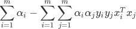
这时就转变成如何求极值的问题：
注意上式中的 xiTxj 是一组向量的内积运算，该式子的约束条件为：
通过拉格朗日乘子法和 SMO（二次规划算法）算法，求出的最大间隔。
在求解间隔最大化时，我们使用了拉格朗日函数，转化后的式子涉及了向量的内积运算，那么经过核函数映射后的内积运算为：
映射后向量变成高维向量，运算量将明显增加，直接运算会导致效率明显下降。不过，在间隔最大化的运算中只使用了高维向量内积运算的结果，并没有单独使用高维向量，也就是说，如果能简单地求出高维向量的内积，那么也可以满足求解间隔最大化的条件。下面假设存在函数 K，能够满足下列条件：
这里的函数 K 就是我们前面所讲的核函数。有了核函数，所有涉及的内积运算到的表达式，都可以通过 K 函数求解得出。
再谈间隔最大化
我们知道，支持向量机是以“间隔”作为损失函数的，支持向量机的学习过程就是使得间隔最大化的过程，若想要了解支持向量机的运转机制，首先就得知道间隔怎么计算。“间隔大小”是由距离分类“界限”最近的两个数据点（即支持向量）决定的。支持向量机对“间隔”的定义非常简单，即处于最边缘的支持向量（样本点）到超平面距离的总和，这里所说的距离就是最常见的几何距离。如果我们用 wx+b 来表示超平面，那么点到三维平面的距离公式如下：
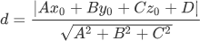
由此也可以推断出点到 N 平面的通式，如下所示：
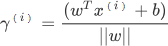
注意：上述公式中被除数是分子，除数是 L2 范式的简要写法，当 i = 3 时，与上述点到三维平面的距离公式相同。
支持向量机算法使用 y =1 来表示正类的分类结果；使用 y = -1 来表示负类结果，所以 y = wx+b 要么是大于或者等于 1，要么小于或等于 -1，由此得出间隔距离也可以表示如下：
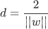
上述距离公式中被除数是 2 （常数），而我们的目的是要求间隔最大化距离，因此式子转换如下：
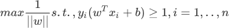
即求 max 1/||w|| 的最大值。此处需要注意，其中 s.t. 表示受约束的（即在某种条件下），上述公式要使左边式子最大，就要使分母越小，因为此处的分子是不变（常数），所以可将上述表达式转换为下列式子：
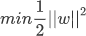
下面使用“拉格朗日乘子法”对上述表达式进一步转换：
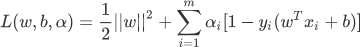
上述公式中，α 被称为“拉格朗日乘子”，然后分别对上式子中的 w 和 b 求导，并令导数为 0，右侧的公式可表示为：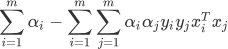
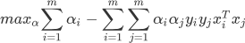
注意上式中的 xiTxj 是一组向量的内积运算，该式子的约束条件为：
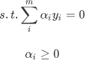
通过拉格朗日乘子法和 SMO（二次规划算法）算法，求出的最大间隔。
注意：拉格朗日乘子算法（以数学家 Joseph-Louis Lagrange 的名字命名）是一种多元函数在其变量受到一个或多个条件的约束时求极值方法。 这种方法可以将一个有 n 个变量与 k 个约束条件的最优化问题转换为一个解有 n + k 个变量的方程组的解的问题。关于拉格朗日乘子算法不做过多介绍，如感兴起可点击前往进行了解。
上述过程中涉及了大量数学概念和的数学运算，这些知识理解起来会比较繁琐，需要慢慢消化，甚至需要您恶补一些数学知识。如果实在看不懂，建议跳过，毕竟这些知识不会影响您使用支持向量机算法。再谈核函数
高维映射说白了就是一种函数映射，在支持向量机中通常采用符号φ来表示这个函数，比如向量 xi 经过高维映射后就变成了 φ(xi)，依次类推超平面的表达式如下所示：
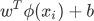
在求解间隔最大化时，我们使用了拉格朗日函数，转化后的式子涉及了向量的内积运算，那么经过核函数映射后的内积运算为：
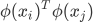
映射后向量变成高维向量，运算量将明显增加，直接运算会导致效率明显下降。不过，在间隔最大化的运算中只使用了高维向量内积运算的结果，并没有单独使用高维向量，也就是说，如果能简单地求出高维向量的内积，那么也可以满足求解间隔最大化的条件。下面假设存在函数 K，能够满足下列条件：
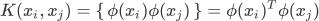
这里的函数 K 就是我们前面所讲的核函数。有了核函数，所有涉及的内积运算到的表达式，都可以通过 K 函数求解得出。
注意：对于已知的映射函数 φ，核函数是很容易计算的，但在大多数情况下，我们并不知道映射函数 φ 的具体形式，好在伟大的数学家们已经证明，在无法得出 φ 时，只要数学函数满足几个相应条件，同样可以将其作为核函数，因此不用担心找不到核函数。
关注公众号「站长严长生」，在手机上阅读所有教程，随时随地都能学习。内含一款搜索神器，免费下载全网书籍和视频。

微信扫码关注公众号